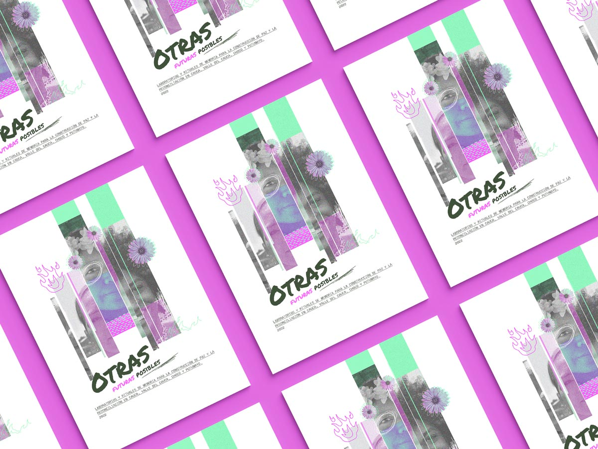

Otras futuras Posibles
> Diseño editorial

¡Somos la chusmasmenta en resistencia!

“Somos la indiamenta que se ha resistido al exterminio desde la llegada de la colonia, lxs que encontramos a pesar de los actos violentos el sentido de la vida y seguimos tejiendo con insistencia la memoria de todos los pueblos”. —Julieth Morales, mujer Misak, Artista.

"En voz de las mayoras mi historia hoy está. Y con ayuda del fuego lo que hice voy a conta’. Me fuí de hacienda en hacienda y en mi nombre las hice arder. En el nombre de les ancestres, en el nombre de todo nuestro Iré. Le quemé la casa al amo. Yo, mujer negra La casa del amo incendié". —Coco Kilele, Poeta


“Resistencia para trenzar el dolor y sanar mi cuerpo Resistencia para caminar la memoria y pintar un mismo universo, universo para danzar y contar la historia diversa sin miedo sin miedo a vivir y tejer en la tierra mis versos”. —Judy Jacanamejoy, Mujer Medicina del alto Putumayo.

Sobre el proyecto
Durante los meses de mayo y junio de 2022, estuvimos junto a La Red Nacional de Mujeres y Colombia Diversa acompañando los Laboratorios de Memoria, unos espacios donde se desarrollaron propuestas de acciones artísticas para la construcción de memoria histórica de mujeres y personas que integran el colectivo LGBTIQ+ en Cauca, Valle del Cauca, Chocó y Putumayo.
En estos laboratorios se habló del pasado, del presente y del futuro. Para el pasado, en cada territorio se construyó un amuleto que recogía reflexiones sobre las consecuencias de las violencias basadas en género. Para Popayán el Anaco, para Buenaventura el río, para Quibdó el fuego, y para Mocoa el chumbe.
El presente se recogió simbólicamente en la figura del ritual, ya que como parte del proyecto, en cada uno de los territorios se realizó una acción pública que llamó a la juntanza para imaginar futuras diversas a través de sus creaciones artísticas.
Durante estos laboratorios se recogieron además, procesos políticos y personales de la memoria entre los y las participantes, con el fin de proyectarse una futura o un futuro posible.
Como tangible final del laboratorio desarrollamos este fanzine, donde la futura puede ser vista como un cúmulo de nuevos hilos de colores, que son sugerencias para el nuevo telar que se avecina.
Acerca del proyecto
Nombre: Otras Futuras Posibles
Cliente: Colombia Diversa
Año: 2022
Productos entregados: 8 relatorías y fanzine.